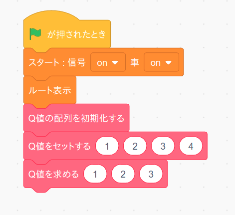

4. Q値の配列の作成
もう一度おさらいすると、Q学習は車(エージェント)がある座標(状況)においてマップ(環境)からもらえる報酬が最大となる様な方向(行動)をトライ＆エラーを繰り返しながら学習していくアルゴリズムです。
具体的にはある座標で車がある方向を選んだらもらえるはずの「報酬の予測値」をQ学習を使って車は学習します。この報酬の予測値のことを"Q値"といいます。Q 値が分かれば実際に行動して報酬をもらう前に行動を選択することが出来るようになる訳ですね。
さてこうなると Q 値を記録する場所を用意する必要が出てきます。通常のプログラミング言語では"配列"というテクニックを使ってQ値を記録するのですが、残念ながら Scratch では配列を使うことが出来ません。
そこで今回はリストを使ってQ値の配列(もどき)を作ってみたいと思います。ただしリストを使った配列の作り方は複雑な数式が必要ですし、今回のセミナーの目的ともズレてますので、ここではプログラムを示すだけに留めておきたいと思います。
まずQ値の配列の元になる「Q値の配列」をリストとして作成します。

このリスト「Q値の配列」を初期化して配列を作るプログラムは次の様になります。「Q値の配列を初期化する」ブロックをブロック定義から作って下さい。なおこのブロックは1度しか実行しませんので「画面を再描画せずに実行する」はチェックしてもしなくても結構です。
(注意) ブロック内の数字は半角英数モードで入力してください(これ以降も)

次はある座標である行動をする場合における「Q値をセットする」ブロックをブロック定義から作ります。このブロックは繰り返し実行されますので「画面を再描画せずに実行する」は必ずチェックして下さい。

緑の部分の式は次のようになっています。特に掛け算と足し算を間違わない様に気をつけてください。
マップの高さ * 4 * Y座標 + 4 * X座標 + 行動
次にある座標である行動をする時の「Q 値を求める」ブロックを作成します。 まず「Q値」という変数を作成します。
次に「Q値を求める」ブロックをブロック定義から作ります。このブロックは繰り返し実行されますので「画面を再描画せずに実行する」は必ずチェックして下さい。
緑の部分の式は上で示した式と同じなので複製すれば良いと思います。
では上で作った3つのブロックのテストをしましょう。まず「緑の旗」を押した時に実行するテストプログラムを次の様に変更します。 プログラムを作りましたら。「緑の旗」ボタンを押してください。
ではプログラムの中身について順を追って説明します。まず最初の「Q値の配列を初期化する」ブロックでは
マップの幅 * マップの高さ * 4の長さで値が全て0のリストを作成する
ということをしています。例えば幅と高さが9の場合は9x9x4=324となりますので、リスト「Q値の配列」の中身を表示すると次のようになります。
次の「Q値をセットする」ブロック
では
車がX座標=1、Y座標=2の座標にいる時に下に移動(行動=3)する時のQ値を4にセットする
ということをしています。
そして最後の「Q値を求める」ブロック
では
車がX座標=1、Y座標=2の座標にいる時に下に移動(行動=3)する時のQ値を求めて変数「Q値」に入れる
ということをしていますので、変数「Q値」の値を表示して 4 となっていれば正常に動作しています。
うまく動きましたらX座標、Y座標、行動、Q値の数値を色々変えてもきちんと動作するか確認して下さい。 確認が終わったらリスト「Q値の配列」と変数「Q値」は非表示に戻しておいて下さい。